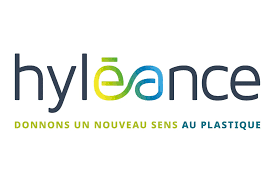

Réalisations – Hyléance
Compréhension de l’infrastructure et assistance IT

Compréhension de l’architecture
L’infrastructure est organisée par niveaux de criticité : Gold, Silver et Bronze. Le niveau Silver correspond au serveur ERP, cœur du système d’information, bénéficiant des protections les plus renforcées.
- Les postes utilisateurs sont protégés par un EDR WithSecure basé sur l’IA
- Les événements sont centralisés dans un SIEM (Wazuh / Graylog / Elastic)
- Un SOC analyse les alertes et intervient en cas d’anomalie
- Active Directory gère les identités locales (utilisateurs et postes)
- Microsoft Entra permet l’authentification Cloud (comptes Microsoft 365)
- Un Bastion AD sécurise les accès administrateurs
- LAPS sécurise les mots de passe administrateur locaux
Compréhension des sauvegarde et continuité de service
- Application de la règle de sauvegarde 3-2-1-1-0
- Compréhension d’un PRA (Plan de Reprise d’Activité)
- Compréhension d’un PCA (Plan de Continuité d’Activité)
- Stockage haute disponibilité via DataCore
Mise à jour des noms et numéros dans Entra 365 Pour un serveur Letsignit
Mise à jour des numéros de téléphone et postes utilisateurs pour validation par les RH.
Mise en place d'une GPO
Mise en place d'une GPO pour premettre une insataltion silencieuse de l’application clikshare.
Support utilisateur
aider le support informatique dans ses tâches.
Mise en production d'un site d'onboarding
afin de faciliter l'onboarding des nouveaux utilisateurs et tester/former leurs connaissance informatique sur un site
ludique dediee a l'entreprise